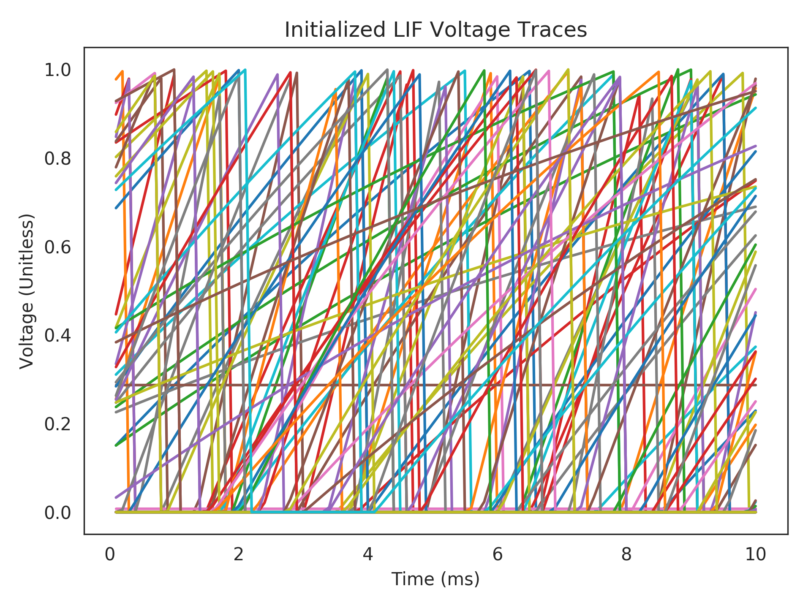

nengolib.neurons.init_lif¶
-
nengolib.neurons.init_lif(sim, ens, x0=None, rng=None)[source]¶ Initialize an ensemble of LIF Neurons to represent
x0.Must be called from within a simulator context block, and before the simulation (see example below).
Parameters: - sim :
nengo.Simulator The created simulator, from whose context the call is within.
- ens :
nengo.Ensemble The ensemble of LIF neurons to be initialized.
- x0 :
(d,) array_like, optional A
d-dimensional state-vector that the ensemble should be initialized to represent, whered = ens.dimensions. Defaults to the zero vector.- rng :
numpy.random.RandomStateorNone, optional Random number generator state.
Returns: - v :
(n,) np.array Array of initialized voltages, where
n = ens.n_neurons.- r :
(n,) np.array Array of initialized refractory times, where
n = ens.n_neurons.
Notes
This will not initialize the synapses.
Examples
>>> import nengo >>> from nengolib import Network >>> from nengolib.neurons import init_lif >>> >>> with Network() as model: >>> u = nengo.Node(0) >>> x = nengo.Ensemble(100, 1) >>> nengo.Connection(u, x) >>> p_v = nengo.Probe(x.neurons, 'voltage') >>> >>> with nengo.Simulator(model, dt=1e-4) as sim: >>> init_lif(sim, x) >>> sim.run(0.01) >>> >>> import matplotlib.pyplot as plt >>> plt.title("Initialized LIF Voltage Traces") >>> plt.plot(1e3 * sim.trange(), sim.data[p_v]) >>> plt.xlabel("Time (ms)") >>> plt.ylabel("Voltage (Unitless)") >>> plt.show()
- sim :